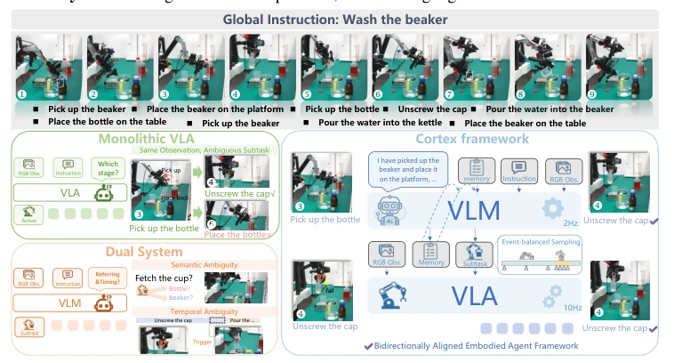
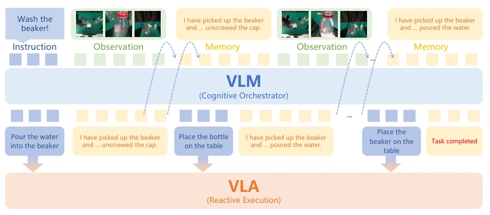
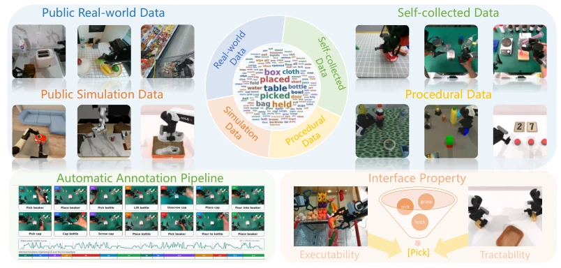
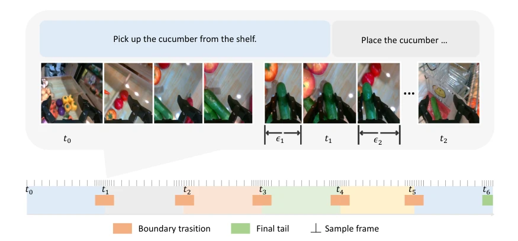
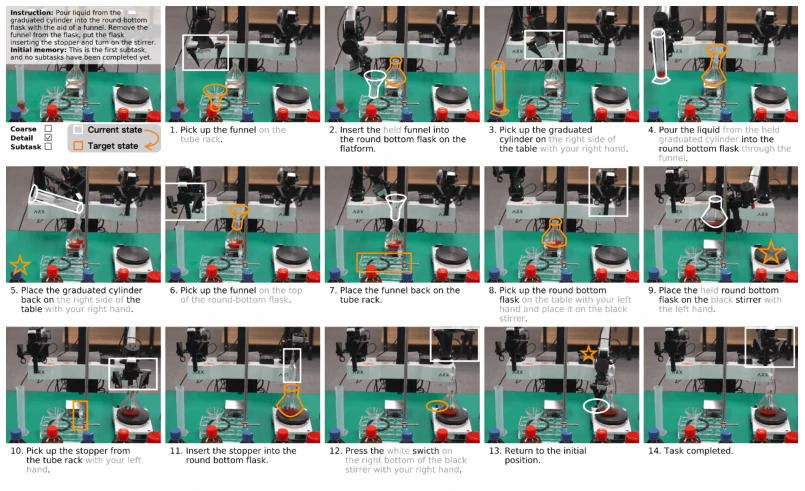
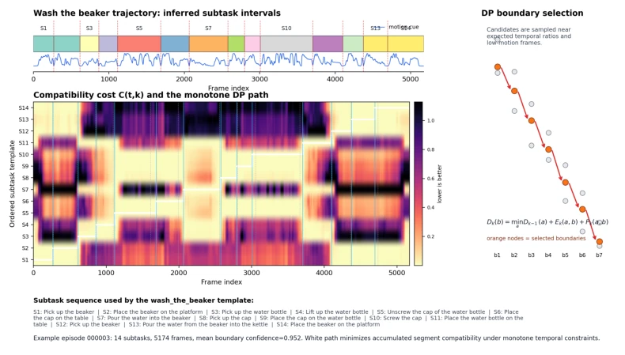
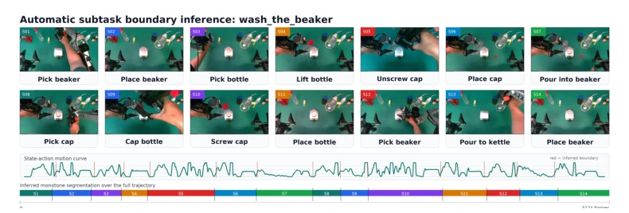
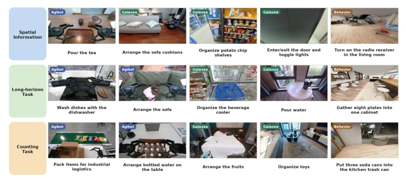
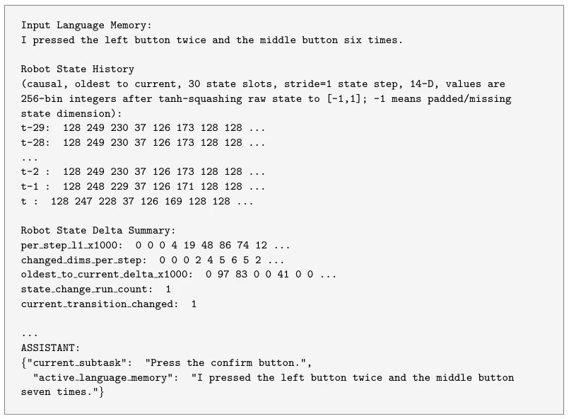
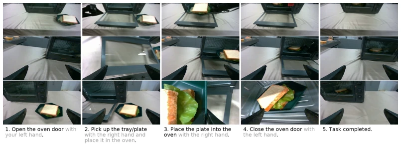

Cortex attempts to address the pain points of VLA long-horizon planning using a dual-system approach. The concept is sound, yet the 'text memory' strategy tends to lose details in complex spatial operations, akin to asking a blind person to navigate a maze based solely on text descriptions. Although it achieved 95.5% on Libero, successfully completing 65% in real-world chemistry experiments is already a miracle, considering end-to-end baselines yield 0%. However, standardizing 32 skill primitives is indeed clever, preventing VLMs from issuing blind commands. Unfortunately, the authors admit text memory loses spatial coordinates, requiring visual retrieval to compensate in the future. Overall, it is an engineering victory with slightly conservative theoretical innovation, but superior to 'general robots' that merely make empty promises, as it can actually perform tasks.
Existing VLA models [1, 4] excel at short-horizon tasks, but long-horizon operations easily lose state due to Markovian characteristics, leading to action repetition or error accumulation [5, 6]. Although hierarchical dual-systems [9, 10] attempt to decouple planning and execution, high-level VLMs often ignore low-level kinematic constraints, creating a semantic-kinematic gap [5, 11]. For instance, SayCan [9] lacks physical grounding, while memory-based VLA [5, 7] planning alignment remains insufficient. Cortex aims to fill this gap through bidirectional alignment, ensuring high-level plans are executable and the low-level understands, resolving the awkwardness of 'thinking well but unable to do'.
The framework comprises a VLM (System-2) and a VLA (System-1). The core lies in the custom subtask interface: defining 32 standard skill primitives, injecting object attributes and reachability constraints, and automatically generating 4k+ hours of video annotation and 30 hours of simulation data. Training employs event-balanced sampling, distinguishing boundary transitions from within-task execution phases to resolve state transition ambiguity. During inference, Harness Engineering maps open instructions to a unified interface, combined with task context and skill constraints. Async execution: VLM monitors progress at low frequency, VLA executes at high frequency, forming a closed loop. Additionally, the data generation phase explicitly includes robot body descriptions to evaluate reachability, ensuring synthetic paths comply with kinematic constraints. During training, System-2 is optimized using an event-balanced dataset to enable active prediction of current subtasks and memory updates, followed by System-1 fine-tuning under executable subtask conditions provided by the VLM.
Evaluated on Libero-long and RoboTwin simulation benchmarks, Cortex achieved success rates of 95.5% and 86.8% respectively, outperforming π0.5 [19] and Gemini [14]. Zero-shot deployment in real-world multi-stage chemistry experiments yielded a 65% success rate, whereas the end-to-end baseline was 0%. Ablation studies indicate the full Harness configuration performs best, with incremental component introduction yielding performance gains. Event-balanced sampling effectively improved boundary identification capabilities, resolving temporal ambiguity in long-horizon tasks. However, text memory carries a risk of spatial correspondence loss in large-scale mobile operations and is insensitive to high-frequency micro-state changes, limiting performance in dynamic environments.
其他图片Other Figures

Figure 1: Compared to previous works, Cortex is an embodied agent framework aligning the high- level VLM and low-level VLA on the subtask executability and tractability, enabling synergistic planning and execution for long-horizon manipulation.

Figure 2: Overview of the Cortex framework. The cognitive orchestrator dynamically updates se- mantic memory to continuously stream executable subtask to ground the reactive System-1 executor.

Figure 3: Long-horizon metadata construction and interface standardization. Our data generation pipeline leverages automated annotation of over 4,000 hours of open-source video data and synthe- sizes high-quality procedural simulation data. frequency motor commands (the action sequence at). However, directly mapping unconstrained high-level cognitive reasoning to low-level reactive control inevitably induces a severe semantic- kinematic gap. We resolve this by instantiating the subtask (st) as a bidirectionally aligned interface. For example, given a complex global instruction I such as “Wash the beaker”, the interface grounds the plan into executable skill primitives, such as s1: “[Pick] the beaker from the table”.

Figure 4: Event-balanced Sampling. Training trajectories are strategically divided into boundary transition phases and intra-task execution phases. The sampling mechanism employs asymmetric temporal margins around the subtask boundaries, explicitly balancing the learning of continuous state maintenance with discrete logical memory updates.

Figure 7: Zero-shot Real-world Deployment in Multi-stage Chemistry Tasks. A 14-step continuous experiment demonstrating Cortex’s exceptional capability in fine-grained spatial-numerical ground- ing, robust long-horizon progress tracking, and closed-loop physical execution.

Figure 8: Annotation-free subtask boundary inference on Wash the beaker. Each thumbnail is sam- pled at the inferred start boundary of a subtask. The bottom bar shows the monotone temporal segmentation over the full trajectory.

Figure 9: Annotation-free boundary inference for a representative Wash the beaker trajectory. Thumbnails indicate inferred subtask onsets, and the lower bar shows the resulting monotone seg- mentation.

Figure 10: Representative raw head-view frames extracted from the 15 tasks in the evaluation suite. The three rows correspond to Spatial Information, Long-horizon Task, and Counting Task, respec- tively, while the five columns in each row follow the task ordering in Table 6.

Figure 12: Training prompt template for System-2. The prompt contains task-level language, input memory, optional ordered subtask guidance, quantized causal state history, delta summaries, and multi-view image tokens. The target is a minimal JSON object rather than free-form reasoning.

Figure 13: Multi-view rollout of the oven heating experiment. From top to bottom, the rows show the head, left-wrist, and right-wrist views. Each column shows an action-switching frame, and the displayed output is the current subtask.